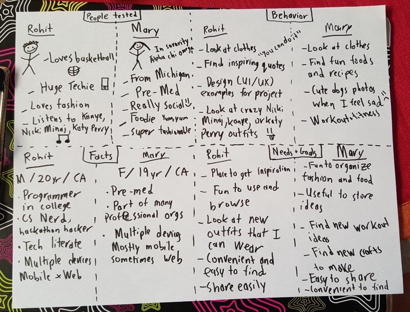
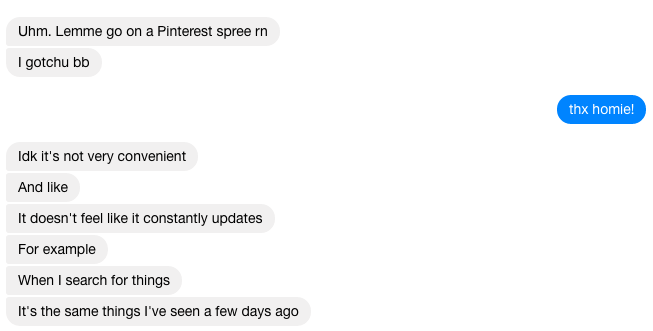
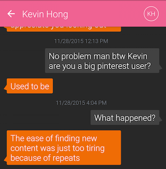
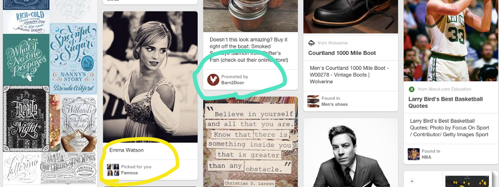
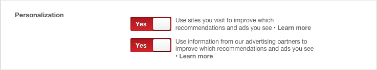
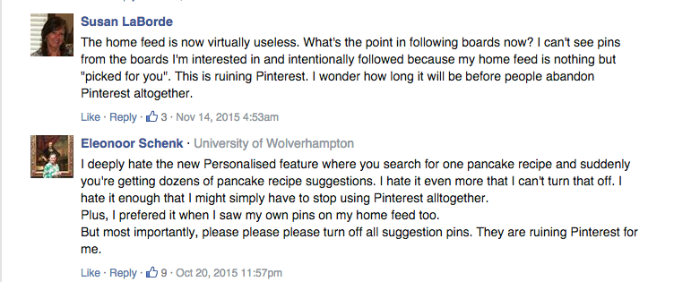
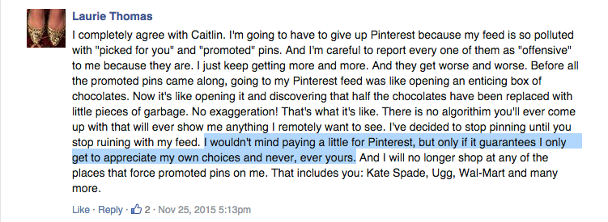
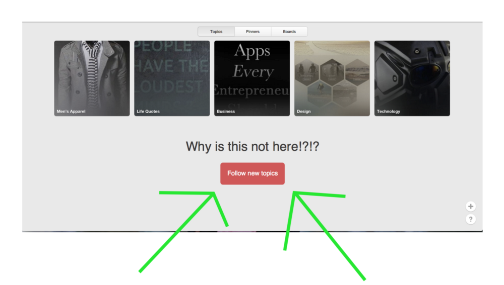

This case study will walkthrough the painful experiences pinners go through and why they eventually abandon Pinterest.
I think Pinterest is nothing less than amazing for finding inspiration or just plainly browsing content, but I am afraid one day the website and application may die from a slow and painful death. I definitely have noticed the past year that the Pinterest hype has died down. Let’s find out why.
Objective
Identify and address pain points and key issues on Pinterest application.
Test Parameters
- What: Pinterest Application
- Who: Rohit Tigga (20 yr old college student male @ UC Davis) and Mary Pham (19 yr old college student female @ UC Davis)
Meet the Users
Meet Mary
Mary uses Pinterest to curate lists for recipes, workouts, fashion, and food.
“I usually use Pinterest when I want to find something new, like a food recipe, workout routine, new outfit, or cute dog photos to keep me happy when I’m down.”
Meet Me (Rohit Tigga)
Unlike most male users or males in general, I love fashion and anything that is cute. But I typically use Pinterest for design inspiration, checking out cool outfits, and motivational quotes to keep me wise and going during tough times.
Test Tasks
- Open the Pinterest App
- View pins(s) and interesting content
- Identify faults and negative experiences
What We Discovered
We eventually both agreed that the act of simply using the app is both well designed, intuitive, and sensible.
But we agreed that we couldn’t find new content for our projects and interests ANYMORE.
Hurried to validate our assumptions, we messaged a couple of our friends who were Pinterest users.
My friend and ex-Pinner, Kevin Hong, said:
The main feed (1st screen) is a feed with all user within a 25 mile radius who have posted in the past 6 hours. For example, Anima wants to grab yogurt and chat about tech. We can request to connect, chat and meet up! This could be great for recruiter or founders trying to hire the next rockstar at their company. Everything is designed around getting relevant information from potential people and having quick and relevant meetings.
I probably could include at least fit 6 more similar messages.
Key Findings
Issue #1: Main Feed is full of irrelevant and non-personalized content
Opening the Pinterest website or mobile application is not what it used to be. It use to be fresh and fun to use, but now it’s bloated with random and stuff that is “picked for you”.
I think Emma Watson is an inspiration to women worldwide and she is a fabulous actor, but what in God’s name is she doing in my main feed?
Also in regards to the green circled (Barn2Door), as a user, I understand that free services come with a cost and in this case, Pinterest needs advertising revenue, but it would be better for both of us if it were relevant for me. I’m not sure when I told Pinterest I’m interested in smoked salmon or if my browsing history indicated that.
If Pinterest wants to stay relevant for users, their contents needs to BE relevant.Design Suggestions
-
Create an easy and comprehensive way to use to actively manage their personalized content. This reinforces that the user is in the driver’s seat and has full control over what they will view in their feed. What is shown below is not enough.
Is this all I get?
After a quick google search for making Pinterest more personalized (by the way, if you have to Google how to do something that’s bad UI/UX), I found out a blog post all the way from 2013 to help me make my feed more personal. But what was more important is that I found out in the comments is that many pinners felt the same way I did.
I’ll let the comments speak for themselves. 😓
-
Having a premium account for users who don’t want to experience pins that aren’t advertisements, “picked for you”, or suggestions. This is similar to how Spotify allows users to pay for premium accounts to be ad-free.
I already found one user who is willing to pay.
If I worked in Business Development or Customer Satisfaction at Pinterest, I would contact every one of these users to apologize about their negative experiences and find out if a $10 month premium account would be a viable solution.
-
Easily ability to update and follow new topics
In order the find out how to update topics, I had to do a quick google search, but I was disappointed to find out that I couldn’t follow new topics.
I’m a 20 year old male. My interests may change a lot as the year progresses. There should be no reason why I shouldn’t be able to add and follow new topics as my interests become bigger or change.
This doesn’t cut it:

I don’t work for or represent Pinterest. I’m just looking to see how it can be improved. 😁